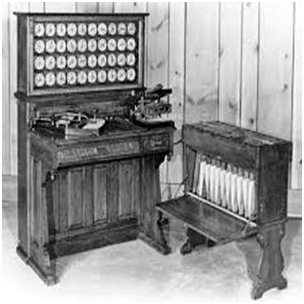

The first counting device was used by the primitive people. They used sticks, stones and bones as counting tools. As human mind and technology improved with time more computing devices were developed. Some of the popular computing devices starting with the first to recent ones are described below;
The history of computer begins with the birth of abacus which is believed to be the first computer. It is said that Chinese invented Abacus around 4,000 years ago.
It was a wooden rack which has metal rods with beads mounted on them. The beads were moved by the abacus operator according to some rules to perform arithmetic calculations. Abacus is still used in some countries like China, Russia and Japan. An image of this tool is shown below;

It was a manually-operated calculating device which was invented by John Napier (1550-1617) of Merchiston. In this calculating tool, he used 9 different ivory strips or bones marked with numbers to multiply and divide. So, the tool became known as "Napier's Bones. It was also the first machine to use the decimal point.

Pascaline is also known as Arithmetic Machine or Adding Machine. It was invented between 1642 and 1644 by a French mathematician-philosopher Biaise Pascal. It is believed that it was the first mechanical and automatic calculator.
Pascal invented this machine to help his father, a tax accountant. It could only perform addition and subtraction. It was a wooden box with a series of gears and wheels. When a wheel is rotated one revolution, it rotates the neighboring wheel. A series of windows is given on the top of the wheels to read the totals. An image of this tool is shown below;

It was developed by a German mathematician-philosopher Gottfried Wilhelm Leibnitz in 1673. He improved Pascal's invention to develop this machine. It was a digital mechanical calculator which was called the stepped reckoner as instead of gears it was made of fluted drums. See the following image;

In the early 1820s, it was designed by Charles Babbage who is known as "Father of Modern Computer". It was a mechanical computer which could perform simple calculations. It was a steam driven calculating machine designed to solve tables of numbers like logarithm tables.

This calculating machine was also developed by Charles Babbage in 1830. It was a mechanical computer that used punch-cards as input. It was capable of solving any mathematical problem and storing information as a permanent memory.

It was invented in 1890, by Herman Hollerith, an American statistician. It was a mechanical tabulator based on punch cards. It could tabulate statistics and record or sort data or information. This machine was used in the 1890 U.S. Census. Hollerith also started the Hollerith?s Tabulating Machine Company which later became International Business Machine (IBM) in 1924.
It was the first electronic computer introduced in the United States in 1930. It was an analog device invented by Vannevar Bush. This machine has vacuum tubes to switch electrical signals to perform calculations. It could do 25 calculations in few minutes.


The next major changes in the history of computer began in 1937 when Howard Aiken planned to develop a machine that could perform calculations involving large numbers. In 1944, Mark I computer was built as a partnership between IBM and Harvard. It was the first programmable digital computer.
A generation of computers refers to the specific improvements in computer technology with time. In 1946, electronic pathways called circuits were developed to perform the counting. It replaced the gears and other mechanical parts used for counting in previous computing machines.
In each new generation, the circuits became smaller and more advanced than the previous generation circuits. The miniaturization helped increase the speed, memory and power of computers. There are five generations of computers which are described below;
The first generation (1946-1959) computers were slow, huge and expensive. In these computers, vacuum tubes were used as the basic components of CPU and memory. These computers were mainly depended on batch operating system and punch cards. Magnetic tape and paper tape were used as output and input devices in this generation;
Some of the popular first generation computers are;
The second generation (1959-1965) was the era of the transistor computers. These computers used transistors which were cheap, compact and consuming less power; it made transistor computers faster than the first generation computers.
In this generation, magnetic cores were used as the primary memory and magnetic disc and tapes were used as the secondary storage.
Assembly language and programming languages like COBOL and FORTRAN, and Batch processing and multiprogramming operating systems were used in these computers.
Some of the popular second generation computers are;
The third generation computers used integrated circuits (ICs) instead of transistors. A single IC can pack huge number of transistors which increased the power of a computer and reduced the cost. The computers also became more reliable, efficient and smaller in size. These generation computers used remote processing, time-sharing, multi programming as operating system. Also, the high-level programming languages like FORTRON-II TO IV, COBOL, PASCAL PL/1, ALGOL-68 were used in this generation.
Some of the popular third generation computers are;
The fourth generation (1971-1980) computers used very large scale integrated (VLSI) circuits; a chip containing millions of transistors and other circuit elements. These chips made this generation computers more compact, powerful, fast and affordable. These generation computers used real time, time sharing and distributed operating system. The programming languages like C, C++, DBASE were also used in this generation.
Some of the popular fourth generation computers are;
In fifth generation (1980-till date) computers, the VLSI technology was replaced with ULSI (Ultra Large Scale Integration). It made possible the production of microprocessor chips with ten million electronic components. This generation computers used parallel processing hardware and AI (Artificial Intelligence) software. The programming languages used in this generation were C, C++, Java, .Net, etc.
Some of the popular fifth generation computers are;